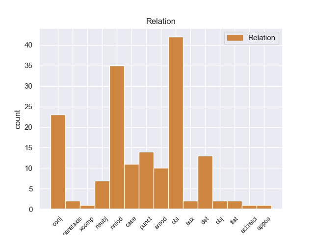
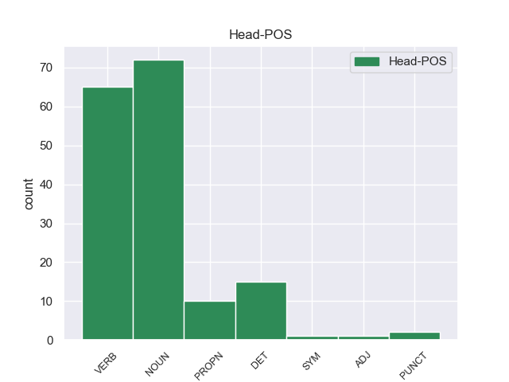
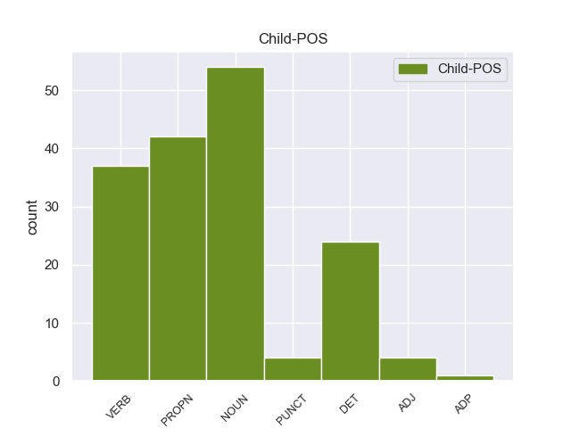

Distribution of features within this leaf



Agreement Rules sorted by frequency.
- When the dependent token is the oblique nominal(obl) of the head token, and the dependent token is NOUN.
1 Su _ _ _ _ 0 _ _ _
2 obra _ _ _ _ 0 _ _ _
3 es _ _ _ _ 0 _ _ _
4 extensísima _ _ _ _ 0 _ _ _
5 , _ _ _ _ 0 _ _ _
6 incluyendo _ _ _ _ 0 _ _ _
7 alrededor _ _ _ _ 0 _ _ _
8 de _ _ _ _ 0 _ _ _
9 cuarenta _ _ _ _ 0 _ _ _
10 libros libros NOUN _ Mood=Ind|Number=Sing|Person=3|Tense=Pres|VerbForm=Fin 13 obl _ _
11 publicados _ _ _ _ 0 _ _ _
12 y _ _ _ _ 0 _ _ _
13 centenas centenas DET _ Mood=Ind|Number=Sing|Person=3|Tense=Past|VerbForm=Fin 0 _ _ _
14 de _ _ _ _ 0 _ _ _
15 artículos _ _ _ _ 0 _ _ _
16 científicos _ _ _ _ 0 _ _ _
17 y _ _ _ _ 0 _ _ _
18 de _ _ _ _ 0 _ _ _
19 divulgación _ _ _ _ 0 _ _ _
20 . _ _ _ _ 0 _ _ _
1 El _ _ _ _ 0 _ _ _
2 mandatario mandatario NOUN _ Mood=Ind|Number=Sing|Person=3|Tense=Pres|VerbForm=Fin 42 nmod _ _
3 uruguayo _ _ _ _ 0 _ _ _
4 , _ _ _ _ 0 _ _ _
5 quien _ _ _ _ 0 _ _ _
6 llegó _ _ _ _ 0 _ _ _
7 el _ _ _ _ 0 _ _ _
8 domingo _ _ _ _ 0 _ _ _
9 a _ _ _ _ 0 _ _ _
10 Paraguay _ _ _ _ 0 _ _ _
11 , _ _ _ _ 0 _ _ _
12 inició _ _ _ _ 0 _ _ _
13 este _ _ _ _ 0 _ _ _
14 lunes _ _ _ _ 0 _ _ _
15 sus _ _ _ _ 0 _ _ _
16 actividades _ _ _ _ 0 _ _ _
17 a _ _ _ _ 0 _ _ _
18 el _ _ _ _ 0 _ _ _
19 colocar _ _ _ _ 0 _ _ _
20 una _ _ _ _ 0 _ _ _
21 ofrenda _ _ _ _ 0 _ _ _
22 floral _ _ _ _ 0 _ _ _
23 en _ _ _ _ 0 _ _ _
24 el _ _ _ _ 0 _ _ _
25 Panteón _ _ _ _ 0 _ _ _
26 de _ _ _ _ 0 _ _ _
27 los _ _ _ _ 0 _ _ _
28 Héroes _ _ _ _ 0 _ _ _
29 , _ _ _ _ 0 _ _ _
30 tras _ _ _ _ 0 _ _ _
31 lo _ _ _ _ 0 _ _ _
32 cual _ _ _ _ 0 _ _ _
33 se _ _ _ _ 0 _ _ _
34 trasladó _ _ _ _ 0 _ _ _
35 a _ _ _ _ 0 _ _ _
36 el _ _ _ _ 0 _ _ _
37 Palacio _ _ _ _ 0 _ _ _
38 de _ _ _ _ 0 _ _ _
39 Gobierno _ _ _ _ 0 _ _ _
40 donde _ _ _ _ 0 _ _ _
41 fue _ _ _ _ 0 _ _ _
42 condecorado condecorado NOUN _ Mood=Ind|Number=Sing|Person=3|Tense=Pres|VerbForm=Fin 0 _ _ _
43 por _ _ _ _ 0 _ _ _
44 Lugo _ _ _ _ 0 _ _ _
45 . _ _ _ _ 0 _ _ _
1 Aun _ _ _ _ 0 _ _ _
2 así _ _ _ _ 0 _ _ _
3 , _ _ _ _ 0 _ _ _
4 los _ _ _ _ 0 _ _ _
5 soviéticos soviéticos PROPN _ Mood=Ind|Number=Sing|Person=3|Tense=Pres|VerbForm=Fin 0 _ _ _
6 y _ _ _ _ 0 _ _ _
7 británicos británicos PROPN _ Mood=Ind|Number=Sing|Person=3|Tense=Pres|VerbForm=Fin 5 nmod _ _
8 exigieron _ _ _ _ 0 _ _ _
9 previamente _ _ _ _ 0 _ _ _
10 que _ _ _ _ 0 _ _ _
11 Bulgaria _ _ _ _ 0 _ _ _
12 renunciara _ _ _ _ 0 _ _ _
13 a _ _ _ _ 0 _ _ _
14 el _ _ _ _ 0 _ _ _
15 litoral _ _ _ _ 0 _ _ _
16 de _ _ _ _ 0 _ _ _
17 el _ _ _ _ 0 _ _ _
18 sur _ _ _ _ 0 _ _ _
19 de _ _ _ _ 0 _ _ _
20 la _ _ _ _ 0 _ _ _
21 región _ _ _ _ 0 _ _ _
22 de _ _ _ _ 0 _ _ _
23 Tracia _ _ _ _ 0 _ _ _
24 ( _ _ _ _ 0 _ _ _
25 el _ _ _ _ 0 _ _ _
26 cual _ _ _ _ 0 _ _ _
27 se _ _ _ _ 0 _ _ _
28 había _ _ _ _ 0 _ _ _
29 anexado _ _ _ _ 0 _ _ _
30 en _ _ _ _ 0 _ _ _
31 junio _ _ _ _ 0 _ _ _
32 de _ _ _ _ 0 _ _ _
33 1941 _ _ _ _ 0 _ _ _
34 ) _ _ _ _ 0 _ _ _
35 , _ _ _ _ 0 _ _ _
36 devolviéndo _ _ _ _ 0 _ _ _
37 lo _ _ _ _ 0 _ _ _
38 a _ _ _ _ 0 _ _ _
39 Grecia _ _ _ _ 0 _ _ _
40 . _ _ _ _ 0 _ _ _
1 La _ _ _ _ 0 _ _ _
2 dhimma _ _ _ _ 0 _ _ _
3 o _ _ _ _ 0 _ _ _
4 protección _ _ _ _ 0 _ _ _
5 no _ _ _ _ 0 _ _ _
6 existe _ _ _ _ 0 _ _ _
7 en _ _ _ _ 0 _ _ _
8 los _ _ _ _ 0 _ _ _
9 modernos _ _ _ _ 0 _ _ _
10 Estados _ _ _ _ 0 _ _ _
11 islámicos _ _ _ _ 0 _ _ _
12 , _ _ _ _ 0 _ _ _
13 aunque _ _ _ _ 0 _ _ _
14 en _ _ _ _ 0 _ _ _
15 algunos _ _ _ _ 0 _ _ _
16 de _ _ _ _ 0 _ _ _
17 ellos _ _ _ _ 0 _ _ _
18 los _ _ _ _ 0 _ _ _
19 miembros _ _ _ _ 0 _ _ _
20 de _ _ _ _ 0 _ _ _
21 minorías _ _ _ _ 0 _ _ _
22 religiosas _ _ _ _ 0 _ _ _
23 siguen siguen VERB _ Mood=Ind|Number=Sing|Person=3|Tense=Pres|VerbForm=Fin 24 obl _ _
24 denunciando denunciando DET _ Mood=Ind|Number=Sing|Person=3|Tense=Pres|VerbForm=Fin 0 _ _ _
25 una _ _ _ _ 0 _ _ _
26 posición _ _ _ _ 0 _ _ _
27 social _ _ _ _ 0 _ _ _
28 inferior _ _ _ _ 0 _ _ _
29 . _ _ _ _ 0 _ _ _
1 Hemos _ _ _ _ 0 _ _ _
2 recibido _ _ _ _ 0 _ _ _
3 un _ _ _ _ 0 _ _ _
4 trato _ _ _ _ 0 _ _ _
5 excelente _ _ _ _ 0 _ _ _
6 y _ _ _ _ 0 _ _ _
7 nos _ _ _ _ 0 _ _ _
8 han han VERB _ Mood=Ind|Number=Sing|Person=3|Tense=Pres|VerbForm=Fin 9 conj _ _
9 gestionado gestionado VERB _ Mood=Ind|Number=Sing|Person=3|Tense=Pres|VerbForm=Fin 0 _ _ _
10 todos _ _ _ _ 0 _ _ _
11 los _ _ _ _ 0 _ _ _
12 trámites _ _ _ _ 0 _ _ _
13 para _ _ _ _ 0 _ _ _
14 montar _ _ _ _ 0 _ _ _
15 nuestra _ _ _ _ 0 _ _ _
16 empresa _ _ _ _ 0 _ _ _
17 en _ _ _ _ 0 _ _ _
18 un _ _ _ _ 0 _ _ _
19 tiempo _ _ _ _ 0 _ _ _
20 récord _ _ _ _ 0 _ _ _
21 . _ _ _ _ 0 _ _ _
1 En _ _ _ _ 0 _ _ _
2 la _ _ _ _ 0 _ _ _
3 Jefatura _ _ _ _ 0 _ _ _
4 de _ _ _ _ 0 _ _ _
5 Gabinete _ _ _ _ 0 _ _ _
6 sostenían _ _ _ _ 0 _ _ _
7 anoche _ _ _ _ 0 _ _ _
8 que _ _ _ _ 0 _ _ _
9 esta _ _ _ _ 0 _ _ _
10 filtración _ _ _ _ 0 _ _ _
11 confirmaría _ _ _ _ 0 _ _ _
12 que _ _ _ _ 0 _ _ _
13 la _ _ _ _ 0 _ _ _
14 SIDE _ _ _ _ 0 _ _ _
15 - _ _ _ _ 0 _ _ _
16 en _ _ _ _ 0 _ _ _
17 el _ _ _ _ 0 _ _ _
18 2007 _ _ _ _ 0 _ _ _
19 -- _ _ _ _ 0 _ _ _
20 habría _ _ _ _ 0 _ _ _
21 entregado _ _ _ _ 0 _ _ _
22 a _ _ _ _ 0 _ _ _
23 la _ _ _ _ 0 _ _ _
24 CIA _ _ _ _ 0 _ _ _
25 una _ _ _ _ 0 _ _ _
26 investigación _ _ _ _ 0 _ _ _
27 destinada _ _ _ _ 0 _ _ _
28 a _ _ _ _ 0 _ _ _
29 ensuciar ensuciar DET _ Mood=Ind|Number=Sing|Person=3|Tense=Past|VerbForm=Fin 0 _ _ _
30 a _ _ _ _ 0 _ _ _
31 Aníbal aníbal PROPN _ Mood=Ind|Number=Sing|Person=3|Tense=Past|VerbForm=Fin 29 obl _ _
32 Fernández _ _ _ _ 0 _ _ _
33 , _ _ _ _ 0 _ _ _
34 como _ _ _ _ 0 _ _ _
35 gestor _ _ _ _ 0 _ _ _
36 de _ _ _ _ 0 _ _ _
37 una _ _ _ _ 0 _ _ _
38 SIDE _ _ _ _ 0 _ _ _
39 paralela _ _ _ _ 0 _ _ _
40 . _ _ _ _ 0 _ _ _
1 Inició _ _ _ _ 0 _ _ _
2 entonces _ _ _ _ 0 _ _ _
3 estudios _ _ _ _ 0 _ _ _
4 de _ _ _ _ 0 _ _ _
5 pintura _ _ _ _ 0 _ _ _
6 en _ _ _ _ 0 _ _ _
7 los _ _ _ _ 0 _ _ _
8 talleres _ _ _ _ 0 _ _ _
9 de _ _ _ _ 0 _ _ _
10 Antonio _ _ _ _ 0 _ _ _
11 Cabral _ _ _ _ 0 _ _ _
12 Bejarano _ _ _ _ 0 _ _ _
13 , _ _ _ _ 0 _ _ _
14 y _ _ _ _ 0 _ _ _
15 más _ _ _ _ 0 _ _ _
16 tarde _ _ _ _ 0 _ _ _
17 en _ _ _ _ 0 _ _ _
18 el _ _ _ _ 0 _ _ _
19 de _ _ _ _ 0 _ _ _
20 su _ _ _ _ 0 _ _ _
21 tío _ _ _ _ 0 _ _ _
22 paterno _ _ _ _ 0 _ _ _
23 Joaquín _ _ _ _ 0 _ _ _
24 Domínguez _ _ _ _ 0 _ _ _
25 Bécquer _ _ _ _ 0 _ _ _
26 , _ _ _ _ 0 _ _ _
27 que _ _ _ _ 0 _ _ _
28 le _ _ _ _ 0 _ _ _
29 pronosticó _ _ _ _ 0 _ _ _
30 « _ _ _ _ 0 _ _ _
31 Tú _ _ _ _ 0 _ _ _
32 no _ _ _ _ 0 _ _ _
33 serás _ _ _ _ 0 _ _ _
34 nunca _ _ _ _ 0 _ _ _
35 un _ _ _ _ 0 _ _ _
36 buen _ _ _ _ 0 _ _ _
37 pintor _ _ _ _ 0 _ _ _
38 , _ _ _ _ 0 _ _ _
39 sino _ _ _ _ 0 _ _ _
40 un _ _ _ _ 0 _ _ _
41 mal _ _ _ _ 0 _ _ _
42 literato _ _ _ _ 0 _ _ _
43 » _ _ _ _ 0 _ _ _
44 , _ _ _ _ 0 _ _ _
45 aunque _ _ _ _ 0 _ _ _
46 le _ _ _ _ 0 _ _ _
47 estimuló _ _ _ _ 0 _ _ _
48 a _ _ _ _ 0 _ _ _
49 los _ _ _ _ 0 _ _ _
50 estudios _ _ _ _ 0 _ _ _
51 y _ _ _ _ 0 _ _ _
52 le le DET _ Mood=Ind|Number=Sing|Person=3|Tense=Past|VerbForm=Fin 53 det _ _
53 pagó pagó NOUN _ Mood=Ind|Number=Sing|Person=3|Tense=Past|VerbForm=Fin 0 _ _ _
54 los _ _ _ _ 0 _ _ _
55 de _ _ _ _ 0 _ _ _
56 latín _ _ _ _ 0 _ _ _
57 . _ _ _ _ 0 _ _ _
1 Así _ _ _ _ 0 _ _ _
2 mismo _ _ _ _ 0 _ _ _
3 , _ _ _ _ 0 _ _ _
4 un _ _ _ _ 0 _ _ _
5 año _ _ _ _ 0 _ _ _
6 antes _ _ _ _ 0 _ _ _
7 , _ _ _ _ 0 _ _ _
8 en _ _ _ _ 0 _ _ _
9 2007 _ _ _ _ 0 _ _ _
10 el _ _ _ _ 0 _ _ _
11 bloque _ _ _ _ 0 _ _ _
12 de _ _ _ _ 0 _ _ _
13 viviendas _ _ _ _ 0 _ _ _
14 sociales _ _ _ _ 0 _ _ _
15 de _ _ _ _ 0 _ _ _
16 el _ _ _ _ 0 _ _ _
17 número _ _ _ _ 0 _ _ _
18 14A _ _ _ _ 0 _ _ _
19 de _ _ _ _ 0 _ _ _
20 la _ _ _ _ 0 _ _ _
21 avenida _ _ _ _ 0 _ _ _
22 Jesús _ _ _ _ 0 _ _ _
23 Galíndez _ _ _ _ 0 _ _ _
24 , _ _ _ _ 0 _ _ _
25 obra _ _ _ _ 0 _ _ _
26 de _ _ _ _ 0 _ _ _
27 los _ _ _ _ 0 _ _ _
28 arquitectos _ _ _ _ 0 _ _ _
29 Sandra _ _ _ _ 0 _ _ _
30 Gorostiza _ _ _ _ 0 _ _ _
31 y _ _ _ _ 0 _ _ _
32 David _ _ _ _ 0 _ _ _
33 Torres _ _ _ _ 0 _ _ _
34 , _ _ _ _ 0 _ _ _
35 fue _ _ _ _ 0 _ _ _
36 premiado premiado VERB _ Mood=Ind|Number=Sing|Person=3|Tense=Pres|VerbForm=Fin 0 _ _ _
37 por _ _ _ _ 0 _ _ _
38 el _ _ _ _ 0 _ _ _
39 Colegio _ _ _ _ 0 _ _ _
40 Oficial _ _ _ _ 0 _ _ _
41 de _ _ _ _ 0 _ _ _
42 Arquitectos arquitectos PROPN _ Mood=Ind|Number=Sing|Person=3|Tense=Past|VerbForm=Fin 36 nsubj _ _
43 Vasco _ _ _ _ 0 _ _ _
44 Navarro _ _ _ _ 0 _ _ _
45 . _ _ _ _ 0 _ _ _
1 La _ _ _ _ 0 _ _ _
2 ciudad _ _ _ _ 0 _ _ _
3 se _ _ _ _ 0 _ _ _
4 administra _ _ _ _ 0 _ _ _
5 mediante _ _ _ _ 0 _ _ _
6 un _ _ _ _ 0 _ _ _
7 alcalde _ _ _ _ 0 _ _ _
8 ( _ _ _ _ 0 _ _ _
9 mayor _ _ _ _ 0 _ _ _
10 ) _ _ _ _ 0 _ _ _
11 elegido _ _ _ _ 0 _ _ _
12 cada _ _ _ _ 0 _ _ _
13 cuatro _ _ _ _ 0 _ _ _
14 años _ _ _ _ 0 _ _ _
15 , _ _ _ _ 0 _ _ _
16 y _ _ _ _ 0 _ _ _
17 un _ _ _ _ 0 _ _ _
18 concejo _ _ _ _ 0 _ _ _
19 ( _ _ _ _ 0 _ _ _
20 Common _ _ _ _ 0 _ _ _
21 Council _ _ _ _ 0 _ _ _
22 ) _ _ _ _ 0 _ _ _
23 de _ _ _ _ 0 _ _ _
24 doce _ _ _ _ 0 _ _ _
25 miembros _ _ _ _ 0 _ _ _
26 ( _ _ _ _ 0 _ _ _
27 alderpersons _ _ _ _ 0 _ _ _
28 ) _ _ _ _ 0 _ _ _
29 elegidos _ _ _ _ 0 _ _ _
30 cada _ _ _ _ 0 _ _ _
31 dos _ _ _ _ 0 _ _ _
32 años _ _ _ _ 0 _ _ _
33 en _ _ _ _ 0 _ _ _
34 base _ _ _ _ 0 _ _ _
35 a _ _ _ _ 0 _ _ _
36 uno _ _ _ _ 0 _ _ _
37 por _ _ _ _ 0 _ _ _
38 cada _ _ _ _ 0 _ _ _
39 uno _ _ _ _ 0 _ _ _
40 de _ _ _ _ 0 _ _ _
41 los _ _ _ _ 0 _ _ _
42 doce _ _ _ _ 0 _ _ _
43 distritos distritos NOUN _ Mood=Ind|Number=Sing|Person=3|Tense=Past|VerbForm=Fin 0 _ _ _
44 electorales _ _ _ _ 0 _ _ _
45 municipales municipales PROPN _ Mood=Ind|Number=Sing|Person=3|Tense=Past|VerbForm=Fin 43 conj _ _
46 . _ _ _ _ 0 _ _ _
1 Tocaron _ _ _ _ 0 _ _ _
2 junto _ _ _ _ 0 _ _ _
3 a _ _ _ _ 0 _ _ _
4 la _ _ _ _ 0 _ _ _
5 otra _ _ _ _ 0 _ _ _
6 en _ _ _ _ 0 _ _ _
7 el _ _ _ _ 0 _ _ _
8 jardín _ _ _ _ 0 _ _ _
9 derecho _ _ _ _ 0 _ _ _
10 y _ _ _ _ 0 _ _ _
11 central _ _ _ _ 0 _ _ _
12 , _ _ _ _ 0 _ _ _
13 y _ _ _ _ 0 _ _ _
14 Crawford _ _ _ _ 0 _ _ _
15 seguido _ _ _ _ 0 _ _ _
16 de _ _ _ _ 0 _ _ _
17 Cobb cobb PROPN _ Mood=Ind|Number=Sing|Person=3|Tense=Past|VerbForm=Fin 23 amod _ _
18 en _ _ _ _ 0 _ _ _
19 el _ _ _ _ 0 _ _ _
20 orden _ _ _ _ 0 _ _ _
21 a _ _ _ _ 0 _ _ _
22 el _ _ _ _ 0 _ _ _
23 bate bate VERB _ Mood=Ind|Number=Sing|Person=3|Tense=Pres|VerbForm=Fin 0 _ _ _
24 año _ _ _ _ 0 _ _ _
25 tras _ _ _ _ 0 _ _ _
26 año _ _ _ _ 0 _ _ _
27 . _ _ _ _ 0 _ _ _
1 Se _ _ _ _ 0 _ _ _
2 supone _ _ _ _ 0 _ _ _
3 que _ _ _ _ 0 _ _ _
4 esto _ _ _ _ 0 _ _ _
5 era _ _ _ _ 0 _ _ _
6 un _ _ _ _ 0 _ _ _
7 secreto _ _ _ _ 0 _ _ _
8 pero _ _ _ _ 0 _ _ _
9 , _ _ _ _ 0 _ _ _
10 finalmente _ _ _ _ 0 _ _ _
11 le _ _ _ _ 0 _ _ _
12 dije dije VERB _ Mood=Ind|Number=Sing|Person=3|Tense=Past|VerbForm=Fin 0 _ _ _
13 a _ _ _ _ 0 _ _ _
14 George george PROPN _ Mood=Ind|Number=Sing|Person=3|Tense=Past|VerbForm=Fin 12 punct _ _
15 que _ _ _ _ 0 _ _ _
16 no _ _ _ _ 0 _ _ _
17 creía _ _ _ _ 0 _ _ _
18 que _ _ _ _ 0 _ _ _
19 fuera _ _ _ _ 0 _ _ _
20 justo _ _ _ _ 0 _ _ _
21 . _ _ _ _ 0 _ _ _
1 Una _ _ _ _ 0 _ _ _
2 relación _ _ _ _ 0 _ _ _
3 de _ _ _ _ 0 _ _ _
4 patrocinio _ _ _ _ 0 _ _ _
5 clave _ _ _ _ 0 _ _ _
6 en _ _ _ _ 0 _ _ _
7 todo _ _ _ _ 0 _ _ _
8 esto _ _ _ _ 0 _ _ _
9 ha ha DET _ Mood=Ind|Number=Sing|Person=3|Tense=Pres|VerbForm=Fin 31 conj _ _
10 sido _ _ _ _ 0 _ _ _
11 con _ _ _ _ 0 _ _ _
12 la _ _ _ _ 0 _ _ _
13 compañía _ _ _ _ 0 _ _ _
14 Nike _ _ _ _ 0 _ _ _
15 , _ _ _ _ 0 _ _ _
16 pues _ _ _ _ 0 _ _ _
17 en _ _ _ _ 0 _ _ _
18 un _ _ _ _ 0 _ _ _
19 contrato _ _ _ _ 0 _ _ _
20 firmado _ _ _ _ 0 _ _ _
21 en _ _ _ _ 0 _ _ _
22 2002 _ _ _ _ 0 _ _ _
23 por _ _ _ _ 0 _ _ _
24 303 _ _ _ _ 0 _ _ _
25 millones _ _ _ _ 0 _ _ _
26 GBP _ _ _ _ 0 _ _ _
27 durante _ _ _ _ 0 _ _ _
28 trece _ _ _ _ 0 _ _ _
29 años _ _ _ _ 0 _ _ _
30 , _ _ _ _ 0 _ _ _
31 gestiona gestiona VERB _ Mood=Ind|Number=Sing|Person=3|Tense=Pres|VerbForm=Fin 0 _ _ _
32 las _ _ _ _ 0 _ _ _
33 operaciones _ _ _ _ 0 _ _ _
34 de _ _ _ _ 0 _ _ _
35 mercadotecnía _ _ _ _ 0 _ _ _
36 de _ _ _ _ 0 _ _ _
37 el _ _ _ _ 0 _ _ _
38 club _ _ _ _ 0 _ _ _
39 como _ _ _ _ 0 _ _ _
40 parte _ _ _ _ 0 _ _ _
41 de _ _ _ _ 0 _ _ _
42 una _ _ _ _ 0 _ _ _
43 asociación _ _ _ _ 0 _ _ _
44 entre _ _ _ _ 0 _ _ _
45 el _ _ _ _ 0 _ _ _
46 club _ _ _ _ 0 _ _ _
47 y _ _ _ _ 0 _ _ _
48 la _ _ _ _ 0 _ _ _
49 empresa _ _ _ _ 0 _ _ _
50 . _ _ _ _ 0 _ _ _
1 Los _ _ _ _ 0 _ _ _
2 directivos _ _ _ _ 0 _ _ _
3 de _ _ _ _ 0 _ _ _
4 Athletic _ _ _ _ 0 _ _ _
5 , _ _ _ _ 0 _ _ _
6 votación votación NOUN _ Mood=Ind|Number=Sing|Person=3|Tense=Pres|VerbForm=Fin 0 _ _ _
7 mediante _ _ _ _ 0 _ _ _
8 , _ _ _ _ 0 _ _ _
9 eligieron eligieron VERB _ Mood=Ind|Number=Sing|Person=3|Tense=Pres|VerbForm=Fin 6 case _ _
10 como _ _ _ _ 0 _ _ _
11 nuevo _ _ _ _ 0 _ _ _
12 presidente _ _ _ _ 0 _ _ _
13 a _ _ _ _ 0 _ _ _
14 Julián _ _ _ _ 0 _ _ _
15 Ruete _ _ _ _ 0 _ _ _
16 , _ _ _ _ 0 _ _ _
17 un _ _ _ _ 0 _ _ _
18 hombre _ _ _ _ 0 _ _ _
19 trascendental _ _ _ _ 0 _ _ _
20 en _ _ _ _ 0 _ _ _
21 la _ _ _ _ 0 _ _ _
22 historia _ _ _ _ 0 _ _ _
23 de _ _ _ _ 0 _ _ _
24 el _ _ _ _ 0 _ _ _
25 club _ _ _ _ 0 _ _ _
26 . _ _ _ _ 0 _ _ _
1 Se _ _ _ _ 0 _ _ _
2 han _ _ _ _ 0 _ _ _
3 conservado conservado VERB _ Mood=Ind|Number=Sing|Person=3|Tense=Pres|VerbForm=Fin 0 _ _ _
4 varias _ _ _ _ 0 _ _ _
5 obras _ _ _ _ 0 _ _ _
6 retóricas retóricas NOUN _ Mood=Ind|Number=Sing|Person=3|Tense=Pres|VerbForm=Fin 3 conj _ _
7 . _ _ _ _ 0 _ _ _
1 Cansado _ _ _ _ 0 _ _ _
2 de _ _ _ _ 0 _ _ _
3 el _ _ _ _ 0 _ _ _
4 encasillamiento _ _ _ _ 0 _ _ _
5 que _ _ _ _ 0 _ _ _
6 le _ _ _ _ 0 _ _ _
7 produce _ _ _ _ 0 _ _ _
8 el _ _ _ _ 0 _ _ _
9 éxito _ _ _ _ 0 _ _ _
10 de _ _ _ _ 0 _ _ _
11 el _ _ _ _ 0 _ _ _
12 ' _ _ _ _ 0 _ _ _
13 Romancero _ _ _ _ 0 _ _ _
14 gitano _ _ _ _ 0 _ _ _
15 ' _ _ _ _ 0 _ _ _
16 y _ _ _ _ 0 _ _ _
17 de _ _ _ _ 0 _ _ _
18 ver _ _ _ _ 0 _ _ _
19 se _ _ _ _ 0 _ _ _
20 vinculado _ _ _ _ 0 _ _ _
21 a _ _ _ _ 0 _ _ _
22 " _ _ _ _ 0 _ _ _
23 un _ _ _ _ 0 _ _ _
24 tono _ _ _ _ 0 _ _ _
25 de _ _ _ _ 0 _ _ _
26 costumbrismo _ _ _ _ 0 _ _ _
27 e _ _ _ _ 0 _ _ _
28 incultura _ _ _ _ 0 _ _ _
29 " _ _ _ _ 0 _ _ _
30 que _ _ _ _ 0 _ _ _
31 siempre _ _ _ _ 0 _ _ _
32 trató _ _ _ _ 0 _ _ _
33 de _ _ _ _ 0 _ _ _
34 evitar _ _ _ _ 0 _ _ _
35 , _ _ _ _ 0 _ _ _
36 en _ _ _ _ 0 _ _ _
37 1929 _ _ _ _ 0 _ _ _
38 su _ _ _ _ 0 _ _ _
39 antiguo _ _ _ _ 0 _ _ _
40 profesor _ _ _ _ 0 _ _ _
41 Fernando _ _ _ _ 0 _ _ _
42 de _ _ _ _ 0 _ _ _
43 los _ _ _ _ 0 _ _ _
44 Ríos _ _ _ _ 0 _ _ _
45 le _ _ _ _ 0 _ _ _
46 ofrece ofrece VERB _ Mood=Ind|Number=Sing|Person=3|Tense=Pres|VerbForm=Fin 0 _ _ _
47 la _ _ _ _ 0 _ _ _
48 oportunidad _ _ _ _ 0 _ _ _
49 de _ _ _ _ 0 _ _ _
50 acompañar _ _ _ _ 0 _ _ _
51 le le DET _ Mood=Ind|Number=Sing|Person=3|Tense=Past|VerbForm=Fin 46 punct _ _
52 a _ _ _ _ 0 _ _ _
53 Nueva _ _ _ _ 0 _ _ _
54 York _ _ _ _ 0 _ _ _
55 . _ _ _ _ 0 _ _ _
1 George _ _ _ _ 0 _ _ _
2 sufre _ _ _ _ 0 _ _ _
3 de _ _ _ _ 0 _ _ _
4 muerte _ _ _ _ 0 _ _ _
5 cerebral _ _ _ _ 0 _ _ _
6 tras _ _ _ _ 0 _ _ _
7 haber _ _ _ _ 0 _ _ _
8 tenido _ _ _ _ 0 _ _ _
9 un _ _ _ _ 0 _ _ _
10 accidente _ _ _ _ 0 _ _ _
11 a _ _ _ _ 0 _ _ _
12 el _ _ _ _ 0 _ _ _
13 tratar _ _ _ _ 0 _ _ _
14 de _ _ _ _ 0 _ _ _
15 salvar _ _ _ _ 0 _ _ _
16 la _ _ _ _ 0 _ _ _
17 vida _ _ _ _ 0 _ _ _
18 de _ _ _ _ 0 _ _ _
19 una _ _ _ _ 0 _ _ _
20 chica _ _ _ _ 0 _ _ _
21 la _ _ _ _ 0 _ _ _
22 cual _ _ _ _ 0 _ _ _
23 iba _ _ _ _ 0 _ _ _
24 a _ _ _ _ 0 _ _ _
25 ser _ _ _ _ 0 _ _ _
26 atropellada _ _ _ _ 0 _ _ _
27 por _ _ _ _ 0 _ _ _
28 un _ _ _ _ 0 _ _ _
29 autobús _ _ _ _ 0 _ _ _
30 , _ _ _ _ 0 _ _ _
31 este _ _ _ _ 0 _ _ _
32 fue _ _ _ _ 0 _ _ _
33 ingresado _ _ _ _ 0 _ _ _
34 en _ _ _ _ 0 _ _ _
35 el _ _ _ _ 0 _ _ _
36 Seattle _ _ _ _ 0 _ _ _
37 Grace _ _ _ _ 0 _ _ _
38 Hospital _ _ _ _ 0 _ _ _
39 y _ _ _ _ 0 _ _ _
40 no _ _ _ _ 0 _ _ _
41 fue _ _ _ _ 0 _ _ _
42 reconocido _ _ _ _ 0 _ _ _
43 por _ _ _ _ 0 _ _ _
44 sus _ _ _ _ 0 _ _ _
45 compañeros _ _ _ _ 0 _ _ _
46 ya _ _ _ _ 0 _ _ _
47 que _ _ _ _ 0 _ _ _
48 tenia _ _ _ _ 0 _ _ _
49 la _ _ _ _ 0 _ _ _
50 cara _ _ _ _ 0 _ _ _
51 desfigurada _ _ _ _ 0 _ _ _
52 , _ _ _ _ 0 _ _ _
53 eventualmente _ _ _ _ 0 _ _ _
54 sus _ _ _ _ 0 _ _ _
55 órganos _ _ _ _ 0 _ _ _
56 son son VERB _ Mood=Ind|Number=Sing|Person=3|Tense=Pres|VerbForm=Fin 57 punct _ _
57 donados donados NOUN _ Mood=Ind|Number=Sing|Person=3|Tense=Past|VerbForm=Fin 0 _ _ _
58 para _ _ _ _ 0 _ _ _
59 la _ _ _ _ 0 _ _ _
60 medicina _ _ _ _ 0 _ _ _
61 . _ _ _ _ 0 _ _ _
1 Quien _ _ _ _ 0 _ _ _
2 no _ _ _ _ 0 _ _ _
3 disponga _ _ _ _ 0 _ _ _
4 de _ _ _ _ 0 _ _ _
5 coche _ _ _ _ 0 _ _ _
6 o _ _ _ _ 0 _ _ _
7 de _ _ _ _ 0 _ _ _
8 carné _ _ _ _ 0 _ _ _
9 de _ _ _ _ 0 _ _ _
10 conducir _ _ _ _ 0 _ _ _
11 , _ _ _ _ 0 _ _ _
12 como _ _ _ _ 0 _ _ _
13 es _ _ _ _ 0 _ _ _
14 el _ _ _ _ 0 _ _ _
15 caso _ _ _ _ 0 _ _ _
16 de _ _ _ _ 0 _ _ _
17 el _ _ _ _ 0 _ _ _
18 popular _ _ _ _ 0 _ _ _
19 Agustín _ _ _ _ 0 _ _ _
20 Baamonde _ _ _ _ 0 _ _ _
21 , _ _ _ _ 0 _ _ _
22 podrá _ _ _ _ 0 _ _ _
23 utilizar _ _ _ _ 0 _ _ _
24 el _ _ _ _ 0 _ _ _
25 transporte _ _ _ _ 0 _ _ _
26 público _ _ _ _ 0 _ _ _
27 con _ _ _ _ 0 _ _ _
28 la _ _ _ _ 0 _ _ _
29 correspondiente _ _ _ _ 0 _ _ _
30 tarjeta _ _ _ _ 0 _ _ _
31 que _ _ _ _ 0 _ _ _
32 expide _ _ _ _ 0 _ _ _
33 el _ _ _ _ 0 _ _ _
34 Parlamento _ _ _ _ 0 _ _ _
35 , _ _ _ _ 0 _ _ _
36 o _ _ _ _ 0 _ _ _
37 bien _ _ _ _ 0 _ _ _
38 reclamar _ _ _ _ 0 _ _ _
39 los _ _ _ _ 0 _ _ _
40 servicios _ _ _ _ 0 _ _ _
41 de _ _ _ _ 0 _ _ _
42 un _ _ _ _ 0 _ _ _
43 taxi _ _ _ _ 0 _ _ _
44 , _ _ _ _ 0 _ _ _
45 aunque _ _ _ _ 0 _ _ _
46 la _ _ _ _ 0 _ _ _
47 compensación compensación NOUN _ Mood=Ind|Number=Sing|Person=3|Tense=Past|VerbForm=Fin 63 amod _ _
48 que _ _ _ _ 0 _ _ _
49 recibirá _ _ _ _ 0 _ _ _
50 de _ _ _ _ 0 _ _ _
51 la _ _ _ _ 0 _ _ _
52 Cámara _ _ _ _ 0 _ _ _
53 no _ _ _ _ 0 _ _ _
54 deberá _ _ _ _ 0 _ _ _
55 exceder _ _ _ _ 0 _ _ _
56 « _ _ _ _ 0 _ _ _
57 en _ _ _ _ 0 _ _ _
58 ningún _ _ _ _ 0 _ _ _
59 caso _ _ _ _ 0 _ _ _
60 » _ _ _ _ 0 _ _ _
61 de _ _ _ _ 0 _ _ _
62 el _ _ _ _ 0 _ _ _
63 gasto gasto NOUN _ Mood=Ind|Number=Sing|Person=3|Tense=Past|VerbForm=Fin 0 _ _ _
64 que _ _ _ _ 0 _ _ _
65 le _ _ _ _ 0 _ _ _
66 correspondería _ _ _ _ 0 _ _ _
67 por _ _ _ _ 0 _ _ _
68 usar _ _ _ _ 0 _ _ _
69 vehículo _ _ _ _ 0 _ _ _
70 propio _ _ _ _ 0 _ _ _
71 . _ _ _ _ 0 _ _ _
1 Lissón _ _ _ _ 0 _ _ _
2 pudo _ _ _ _ 0 _ _ _
3 declarar _ _ _ _ 0 _ _ _
4 con _ _ _ _ 0 _ _ _
5 toda _ _ _ _ 0 _ _ _
6 verdad _ _ _ _ 0 _ _ _
7 : _ _ _ _ 0 _ _ _
8 " _ _ _ _ 0 _ _ _
9 no _ _ _ _ 0 _ _ _
10 debo _ _ _ _ 0 _ _ _
11 nada _ _ _ _ 0 _ _ _
12 a _ _ _ _ 0 _ _ _
13 el _ _ _ _ 0 _ _ _
14 arzobispado _ _ _ _ 0 _ _ _
15 de _ _ _ _ 0 _ _ _
16 Lima _ _ _ _ 0 _ _ _
17 ni _ _ _ _ 0 _ _ _
18 a _ _ _ _ 0 _ _ _
19 sus _ _ _ _ 0 _ _ _
20 instituciones _ _ _ _ 0 _ _ _
21 , _ _ _ _ 0 _ _ _
22 pues _ _ _ _ 0 _ _ _
23 jamás _ _ _ _ 0 _ _ _
24 he he DET _ Mood=Ind|Number=Sing|Person=3|Tense=Pres|VerbForm=Fin 25 obl _ _
25 dispuesto dispuesto VERB _ Mood=Ind|Number=Sing|Person=3|Tense=Past|VerbForm=Fin 0 _ _ _
26 de _ _ _ _ 0 _ _ _
27 ninguno _ _ _ _ 0 _ _ _
28 de _ _ _ _ 0 _ _ _
29 sus _ _ _ _ 0 _ _ _
30 bienes _ _ _ _ 0 _ _ _
31 para _ _ _ _ 0 _ _ _
32 mi _ _ _ _ 0 _ _ _
33 beneficio _ _ _ _ 0 _ _ _
34 personal _ _ _ _ 0 _ _ _
35 o _ _ _ _ 0 _ _ _
36 el _ _ _ _ 0 _ _ _
37 de _ _ _ _ 0 _ _ _
38 mi _ _ _ _ 0 _ _ _
39 familia _ _ _ _ 0 _ _ _
40 " _ _ _ _ 0 _ _ _
41 . _ _ _ _ 0 _ _ _
1 El _ _ _ _ 0 _ _ _
2 tubérculo _ _ _ _ 0 _ _ _
3 para _ _ _ _ 0 _ _ _
4 preparar _ _ _ _ 0 _ _ _
5 la _ _ _ _ 0 _ _ _
6 harina _ _ _ _ 0 _ _ _
7 debe _ _ _ _ 0 _ _ _
8 ser _ _ _ _ 0 _ _ _
9 recolectado _ _ _ _ 0 _ _ _
10 cuando _ _ _ _ 0 _ _ _
11 la _ _ _ _ 0 _ _ _
12 planta _ _ _ _ 0 _ _ _
13 está _ _ _ _ 0 _ _ _
14 recién _ _ _ _ 0 _ _ _
15 seca _ _ _ _ 0 _ _ _
16 después _ _ _ _ 0 _ _ _
17 de _ _ _ _ 0 _ _ _
18 la _ _ _ _ 0 _ _ _
19 floración _ _ _ _ 0 _ _ _
20 y _ _ _ _ 0 _ _ _
21 cuando _ _ _ _ 0 _ _ _
22 ha _ _ _ _ 0 _ _ _
23 soltado soltado VERB _ Mood=Ind|Number=Sing|Person=3|Tense=Past|VerbForm=Fin 0 _ _ _
24 las _ _ _ _ 0 _ _ _
25 semillas semillas NOUN _ Mood=Ind|Number=Sing|Person=3|Tense=Past|VerbForm=Fin 23 punct _ _
26 . _ _ _ _ 0 _ _ _
1 En _ _ _ _ 0 _ _ _
2 1996 _ _ _ _ 0 _ _ _
3 Nick _ _ _ _ 0 _ _ _
4 Cave _ _ _ _ 0 _ _ _
5 colaboró colaborar VERB _ Mood=Ind|Number=Sing|Person=3|Tense=Past|VerbForm=Fin 0 _ _ _
6 con _ _ _ _ 0 _ _ _
7 la _ _ _ _ 0 _ _ _
8 banda _ _ _ _ 0 _ _ _
9 Current _ _ _ _ 0 _ _ _
10 93 _ _ _ _ 0 _ _ _
11 , _ _ _ _ 0 _ _ _
12 principalmente _ _ _ _ 0 _ _ _
13 en _ _ _ _ 0 _ _ _
14 el _ _ _ _ 0 _ _ _
15 álbum _ _ _ _ 0 _ _ _
16 All _ _ _ _ 0 _ _ _
17 the _ _ _ _ 0 _ _ _
18 Pretty _ _ _ _ 0 _ _ _
19 Little _ _ _ _ 0 _ _ _
20 Horses _ _ _ _ 0 _ _ _
21 : _ _ _ _ 0 _ _ _
22 allí _ _ _ _ 0 _ _ _
23 canta cantar VERB _ Mood=Ind|Number=Sing|Person=3|Tense=Pres|VerbForm=Fin 5 parataxis _ _
24 la _ _ _ _ 0 _ _ _
25 canción _ _ _ _ 0 _ _ _
26 de _ _ _ _ 0 _ _ _
27 el _ _ _ _ 0 _ _ _
28 mismo _ _ _ _ 0 _ _ _
29 nombre _ _ _ _ 0 _ _ _
30 y _ _ _ _ 0 _ _ _
31 en _ _ _ _ 0 _ _ _
32 otras _ _ _ _ 0 _ _ _
33 canciones _ _ _ _ 0 _ _ _
34 de _ _ _ _ 0 _ _ _
35 este _ _ _ _ 0 _ _ _
36 álbum _ _ _ _ 0 _ _ _
37 lee _ _ _ _ 0 _ _ _
38 extractos _ _ _ _ 0 _ _ _
39 de _ _ _ _ 0 _ _ _
40 el _ _ _ _ 0 _ _ _
41 libro _ _ _ _ 0 _ _ _
42 Pensamientos _ _ _ _ 0 _ _ _
43 de _ _ _ _ 0 _ _ _
44 Blaise _ _ _ _ 0 _ _ _
45 Pascal _ _ _ _ 0 _ _ _
46 . _ _ _ _ 0 _ _ _
1 Adriano _ _ _ _ 0 _ _ _
2 Fiori _ _ _ _ 0 _ _ _
3 ( _ _ _ _ 0 _ _ _
4 1865 _ _ _ _ 0 _ _ _
5 -- _ _ _ _ 0 _ _ _
6 1950 _ _ _ _ 0 _ _ _
7 ) _ _ _ _ 0 _ _ _
8 fue _ _ _ _ 0 _ _ _
9 un _ _ _ _ 0 _ _ _
10 botánico _ _ _ _ 0 _ _ _
11 , _ _ _ _ 0 _ _ _
12 pteridólogo pteridólogo PUNCT _ Mood=Ind|Number=Sing|Person=3|Tense=Pres|VerbForm=Fin 18 nmod _ _
13 , _ _ _ _ 0 _ _ _
14 micólogo _ _ _ _ 0 _ _ _
15 italiano _ _ _ _ 0 _ _ _
16 , _ _ _ _ 0 _ _ _
17 siendo _ _ _ _ 0 _ _ _
18 profesor profeso NOUN _ Mood=Ind|Number=Sing|Person=3|Tense=Pres|VerbForm=Fin 0 _ _ _
19 en _ _ _ _ 0 _ _ _
20 el _ _ _ _ 0 _ _ _
21 " _ _ _ _ 0 _ _ _
22 Real _ _ _ _ 0 _ _ _
23 Instituto _ _ _ _ 0 _ _ _
24 Forestal _ _ _ _ 0 _ _ _
25 de _ _ _ _ 0 _ _ _
26 Vallombrosa _ _ _ _ 0 _ _ _
27 " _ _ _ _ 0 _ _ _
28 . _ _ _ _ 0 _ _ _
1 Mientras _ _ _ _ 0 _ _ _
2 que _ _ _ _ 0 _ _ _
3 en _ _ _ _ 0 _ _ _
4 otros _ _ _ _ 0 _ _ _
5 países _ _ _ _ 0 _ _ _
6 se _ _ _ _ 0 _ _ _
7 seguía _ _ _ _ 0 _ _ _
8 separando _ _ _ _ 0 _ _ _
9 la _ _ _ _ 0 _ _ _
10 profesión profesión NOUN _ Mood=Ind|Number=Sing|Person=3|Tense=Pres|VerbForm=Fin 0 _ _ _
11 de _ _ _ _ 0 _ _ _
12 uno _ _ _ _ 0 _ _ _
13 y _ _ _ _ 0 _ _ _
14 otro _ _ _ _ 0 _ _ _
15 , _ _ _ _ 0 _ _ _
16 ejemplo _ _ _ _ 0 _ _ _
17 de _ _ _ _ 0 _ _ _
18 Italia _ _ _ _ 0 _ _ _
19 con _ _ _ _ 0 _ _ _
20 el _ _ _ _ 0 _ _ _
21 Ingegnere _ _ _ _ 0 _ _ _
22 Civile civile ADJ _ Mood=Ind|Number=Sing|Person=3|Tense=Past|VerbForm=Fin 10 nmod _ _
23 - _ _ _ _ 0 _ _ _
24 Edile _ _ _ _ 0 _ _ _
25 ( _ _ _ _ 0 _ _ _
26 Ingeniero _ _ _ _ 0 _ _ _
27 Civil _ _ _ _ 0 _ _ _
28 o _ _ _ _ 0 _ _ _
29 de _ _ _ _ 0 _ _ _
30 la _ _ _ _ 0 _ _ _
31 Construcción _ _ _ _ 0 _ _ _
32 en _ _ _ _ 0 _ _ _
33 otros _ _ _ _ 0 _ _ _
34 países _ _ _ _ 0 _ _ _
35 ) _ _ _ _ 0 _ _ _
36 y _ _ _ _ 0 _ _ _
37 el _ _ _ _ 0 _ _ _
38 Architetto _ _ _ _ 0 _ _ _
39 , _ _ _ _ 0 _ _ _
40 en _ _ _ _ 0 _ _ _
41 España _ _ _ _ 0 _ _ _
42 , _ _ _ _ 0 _ _ _
43 la _ _ _ _ 0 _ _ _
44 implantación _ _ _ _ 0 _ _ _
45 de _ _ _ _ 0 _ _ _
46 el _ _ _ _ 0 _ _ _
47 título _ _ _ _ 0 _ _ _
48 de _ _ _ _ 0 _ _ _
49 Aparejador _ _ _ _ 0 _ _ _
50 supone _ _ _ _ 0 _ _ _
51 que _ _ _ _ 0 _ _ _
52 el _ _ _ _ 0 _ _ _
53 Arquitecto _ _ _ _ 0 _ _ _
54 pase _ _ _ _ 0 _ _ _
55 a _ _ _ _ 0 _ _ _
56 tener _ _ _ _ 0 _ _ _
57 atribuciones _ _ _ _ 0 _ _ _
58 en _ _ _ _ 0 _ _ _
59 el _ _ _ _ 0 _ _ _
60 proyecto _ _ _ _ 0 _ _ _
61 arquitectónico _ _ _ _ 0 _ _ _
62 , _ _ _ _ 0 _ _ _
63 lo _ _ _ _ 0 _ _ _
64 que _ _ _ _ 0 _ _ _
65 se _ _ _ _ 0 _ _ _
66 llama _ _ _ _ 0 _ _ _
67 el _ _ _ _ 0 _ _ _
68 proyecto _ _ _ _ 0 _ _ _
69 básico _ _ _ _ 0 _ _ _
70 propio _ _ _ _ 0 _ _ _
71 de _ _ _ _ 0 _ _ _
72 la _ _ _ _ 0 _ _ _
73 profesión _ _ _ _ 0 _ _ _
74 de _ _ _ _ 0 _ _ _
75 Arquitecto _ _ _ _ 0 _ _ _
76 , _ _ _ _ 0 _ _ _
77 y _ _ _ _ 0 _ _ _
78 además _ _ _ _ 0 _ _ _
79 pase _ _ _ _ 0 _ _ _
80 a _ _ _ _ 0 _ _ _
81 tener _ _ _ _ 0 _ _ _
82 las _ _ _ _ 0 _ _ _
83 atribuciones _ _ _ _ 0 _ _ _
84 en _ _ _ _ 0 _ _ _
85 el _ _ _ _ 0 _ _ _
86 proyecto _ _ _ _ 0 _ _ _
87 de _ _ _ _ 0 _ _ _
88 ejecución _ _ _ _ 0 _ _ _
89 , _ _ _ _ 0 _ _ _
90 asimilables _ _ _ _ 0 _ _ _
91 a _ _ _ _ 0 _ _ _
92 la _ _ _ _ 0 _ _ _
93 profesión _ _ _ _ 0 _ _ _
94 de _ _ _ _ 0 _ _ _
95 Ingeniero _ _ _ _ 0 _ _ _
96 de _ _ _ _ 0 _ _ _
97 la _ _ _ _ 0 _ _ _
98 Edificación _ _ _ _ 0 _ _ _
99 o _ _ _ _ 0 _ _ _
100 Maestro _ _ _ _ 0 _ _ _
101 de _ _ _ _ 0 _ _ _
102 Obras _ _ _ _ 0 _ _ _
103 . _ _ _ _ 0 _ _ _
1 El _ _ _ _ 0 _ _ _
2 interés _ _ _ _ 0 _ _ _
3 real _ _ _ _ 0 _ _ _
4 de _ _ _ _ 0 _ _ _
5 el _ _ _ _ 0 _ _ _
6 Getafe _ _ _ _ 0 _ _ _
7 será _ _ _ _ 0 _ _ _
8 pedir _ _ _ _ 0 _ _ _
9 la _ _ _ _ 0 _ _ _
10 cesión _ _ _ _ 0 _ _ _
11 , _ _ _ _ 0 _ _ _
12 nunca _ _ _ _ 0 _ _ _
13 la _ _ _ _ 0 _ _ _
14 compra _ _ _ _ 0 _ _ _
15 , _ _ _ _ 0 _ _ _
16 ya _ _ _ _ 0 _ _ _
17 que _ _ _ _ 0 _ _ _
18 quiere _ _ _ _ 0 _ _ _
19 el _ _ _ _ 0 _ _ _
20 relevo _ _ _ _ 0 _ _ _
21 de _ _ _ _ 0 _ _ _
22 Soldado _ _ _ _ 0 _ _ _
23 que _ _ _ _ 0 _ _ _
24 se _ _ _ _ 0 _ _ _
25 marchó _ _ _ _ 0 _ _ _
26 a _ _ _ _ 0 _ _ _
27 el _ _ _ _ 0 _ _ _
28 Valencia _ _ _ _ 0 _ _ _
29 por _ _ _ _ 0 _ _ _
30 una _ _ _ _ 0 _ _ _
31 cifra _ _ _ _ 0 _ _ _
32 de _ _ _ _ 0 _ _ _
33 10 _ _ _ _ 0 _ _ _
34 millones _ _ _ _ 0 _ _ _
35 de _ _ _ _ 0 _ _ _
36 euros _ _ _ _ 0 _ _ _
37 y _ _ _ _ 0 _ _ _
38 no no PUNCT _ Mood=Ind|Number=Sing|Person=3|Tense=Pres|VerbForm=Fin 40 case _ _
39 quiere _ _ _ _ 0 _ _ _
40 gastar gastar DET _ Mood=Ind|Number=Sing|Person=3|Tense=Past|VerbForm=Fin 0 _ _ _
41 ni _ _ _ _ 0 _ _ _
42 un _ _ _ _ 0 _ _ _
43 euro _ _ _ _ 0 _ _ _
44 por _ _ _ _ 0 _ _ _
45 el _ _ _ _ 0 _ _ _
46 delantero _ _ _ _ 0 _ _ _
47 . _ _ _ _ 0 _ _ _
1 En _ _ _ _ 0 _ _ _
2 septiembre _ _ _ _ 0 _ _ _
3 la _ _ _ _ 0 _ _ _
4 asignaron asignaron NOUN _ Mood=Ind|Number=Sing|Person=3|Tense=Past|VerbForm=Fin 0 _ _ _
5 - _ _ _ _ 0 _ _ _
6 junto _ _ _ _ 0 _ _ _
7 a _ _ _ _ 0 _ _ _
8 Katia _ _ _ _ 0 _ _ _
9 Budánova _ _ _ _ 0 _ _ _
10 , _ _ _ _ 0 _ _ _
11 otras _ _ _ _ 0 _ _ _
12 seis _ _ _ _ 0 _ _ _
13 mujeres _ _ _ _ 0 _ _ _
14 piloto _ _ _ _ 0 _ _ _
15 y _ _ _ _ 0 _ _ _
16 personal _ _ _ _ 0 _ _ _
17 de _ _ _ _ 0 _ _ _
18 tierra _ _ _ _ 0 _ _ _
19 femenino _ _ _ _ 0 _ _ _
20 - _ _ _ _ 0 _ _ _
21 a _ _ _ _ 0 _ _ _
22 el _ _ _ _ 0 _ _ _
23 437 _ _ _ _ 0 _ _ _
24 IAP _ _ _ _ 0 _ _ _
25 , _ _ _ _ 0 _ _ _
26 un _ _ _ _ 0 _ _ _
27 regimiento _ _ _ _ 0 _ _ _
28 masculino _ _ _ _ 0 _ _ _
29 corriente _ _ _ _ 0 _ _ _
30 que _ _ _ _ 0 _ _ _
31 luchaba _ _ _ _ 0 _ _ _
32 en _ _ _ _ 0 _ _ _
33 Stalingrado _ _ _ _ 0 _ _ _
34 , _ _ _ _ 0 _ _ _
35 donde _ _ _ _ 0 _ _ _
36 estaban _ _ _ _ 0 _ _ _
37 sufriendo _ _ _ _ 0 _ _ _
38 pérdidas _ _ _ _ 0 _ _ _
39 cuantiosas cuantiosas NOUN _ Mood=Ind|Number=Sing|Person=3|Tense=Past|VerbForm=Fin 4 case _ _
40 . _ _ _ _ 0 _ _ _
1 Vastos _ _ _ _ 0 _ _ _
2 latifundios _ _ _ _ 0 _ _ _
3 son son NOUN _ Mood=Ind|Number=Sing|Person=3|Tense=Pres|VerbForm=Fin 6 det _ _
4 requisados _ _ _ _ 0 _ _ _
5 y _ _ _ _ 0 _ _ _
6 asignados asignados NOUN _ Mood=Ind|Number=Sing|Person=3|Tense=Past|VerbForm=Fin 0 _ _ _
7 a _ _ _ _ 0 _ _ _
8 exponentes _ _ _ _ 0 _ _ _
9 de _ _ _ _ 0 _ _ _
10 la _ _ _ _ 0 _ _ _
11 aristocracia _ _ _ _ 0 _ _ _
12 romana _ _ _ _ 0 _ _ _
13 . _ _ _ _ 0 _ _ _
1 Las _ _ _ _ 0 _ _ _
2 semillas _ _ _ _ 0 _ _ _
3 tienen _ _ _ _ 0 _ _ _
4 7-9 _ _ _ _ 0 _ _ _
5 mm _ _ _ _ 0 _ _ _
6 de _ _ _ _ 0 _ _ _
7 largo _ _ _ _ 0 _ _ _
8 con _ _ _ _ 0 _ _ _
9 una _ _ _ _ 0 _ _ _
10 cuña _ _ _ _ 0 _ _ _
11 en _ _ _ _ 0 _ _ _
12 forma _ _ _ _ 0 _ _ _
13 de _ _ _ _ 0 _ _ _
14 ala _ _ _ _ 0 _ _ _
15 de _ _ _ _ 0 _ _ _
16 1,5 _ _ _ _ 0 _ _ _
17 cm _ _ _ _ 0 _ _ _
18 de _ _ _ _ 0 _ _ _
19 largo _ _ _ _ 0 _ _ _
20 y _ _ _ _ 0 _ _ _
21 son _ _ _ _ 0 _ _ _
22 liberadas liberada VERB _ Mood=Ind|Number=Sing|Person=3|Tense=Past|VerbForm=Fin 0 _ _ _
23 después _ _ _ _ 0 _ _ _
24 de _ _ _ _ 0 _ _ _
25 que _ _ _ _ 0 _ _ _
26 los _ _ _ _ 0 _ _ _
27 conos conos DET _ Mood=Ind|Number=Sing|Person=3|Tense=Past|VerbForm=Fin 22 case _ _
28 se _ _ _ _ 0 _ _ _
29 desintegren _ _ _ _ 0 _ _ _
30 en _ _ _ _ 0 _ _ _
31 su _ _ _ _ 0 _ _ _
32 maduración _ _ _ _ 0 _ _ _
33 en _ _ _ _ 0 _ _ _
34 octubre _ _ _ _ 0 _ _ _
35 . _ _ _ _ 0 _ _ _
1 Su _ _ _ _ 0 _ _ _
2 mentor _ _ _ _ 0 _ _ _
3 , _ _ _ _ 0 _ _ _
4 Beres _ _ _ _ 0 _ _ _
5 Hammond _ _ _ _ 0 _ _ _
6 , _ _ _ _ 0 _ _ _
7 fue ser VERB _ Mood=Ind|Number=Sing|Person=3|Tense=Past|VerbForm=Fin 0 _ _ _
8 quien _ _ _ _ 0 _ _ _
9 lo _ _ _ _ 0 _ _ _
10 produjo producir VERB _ Mood=Ind|Number=Sing|Person=3|Tense=Past|VerbForm=Fin 7 xcomp _ SpaceAfter=No
11 . _ _ _ _ 0 _ _ _
1 Su _ _ _ _ 0 _ _ _
2 primera _ _ _ _ 0 _ _ _
3 novela _ _ _ _ 0 _ _ _
4 , _ _ _ _ 0 _ _ _
5 El _ _ _ _ 0 _ _ _
6 Evangelio _ _ _ _ 0 _ _ _
7 de _ _ _ _ 0 _ _ _
8 Satanás _ _ _ _ 0 _ _ _
9 ( _ _ _ _ 0 _ _ _
10 El _ _ _ _ 0 _ _ _
11 Evangelio _ _ _ _ 0 _ _ _
12 de _ _ _ _ 0 _ _ _
13 el _ _ _ _ 0 _ _ _
14 Mal _ _ _ _ 0 _ _ _
15 ) _ _ _ _ 0 _ _ _
16 , _ _ _ _ 0 _ _ _
17 la _ _ _ _ 0 _ _ _
18 cual _ _ _ _ 0 _ _ _
19 fue _ _ _ _ 0 _ _ _
20 publicada _ _ _ _ 0 _ _ _
21 en _ _ _ _ 0 _ _ _
22 el _ _ _ _ 0 _ _ _
23 2007 _ _ _ _ 0 _ _ _
24 , _ _ _ _ 0 _ _ _
25 se _ _ _ _ 0 _ _ _
26 vendieron vendieron VERB _ Mood=Ind|Number=Sing|Person=3|Tense=Past|VerbForm=Fin 0 _ _ _
27 más _ _ _ _ 0 _ _ _
28 de _ _ _ _ 0 _ _ _
29 200.000 _ _ _ _ 0 _ _ _
30 copias _ _ _ _ 0 _ _ _
31 y _ _ _ _ 0 _ _ _
32 es _ _ _ _ 0 _ _ _
33 actualmente _ _ _ _ 0 _ _ _
34 objeto _ _ _ _ 0 _ _ _
35 de _ _ _ _ 0 _ _ _
36 una _ _ _ _ 0 _ _ _
37 docena _ _ _ _ 0 _ _ _
38 de _ _ _ _ 0 _ _ _
39 traducciones traducciones VERB _ Mood=Ind|Number=Sing|Person=3|Tense=Past|VerbForm=Fin 26 amod _ _
40 en _ _ _ _ 0 _ _ _
41 todo _ _ _ _ 0 _ _ _
42 el _ _ _ _ 0 _ _ _
43 mundo _ _ _ _ 0 _ _ _
44 . _ _ _ _ 0 _ _ _
1 Este _ _ _ _ 0 _ _ _
2 vergonzante _ _ _ _ 0 _ _ _
3 desfile _ _ _ _ 0 _ _ _
4 de _ _ _ _ 0 _ _ _
5 adulones _ _ _ _ 0 _ _ _
6 de _ _ _ _ 0 _ _ _
7 la _ _ _ _ 0 _ _ _
8 pseuda _ _ _ _ 0 _ _ _
9 oposicion _ _ _ _ 0 _ _ _
10 radical _ _ _ _ 0 _ _ _
11 y _ _ _ _ 0 _ _ _
12 el _ _ _ _ 0 _ _ _
13 desmembramiento _ _ _ _ 0 _ _ _
14 de _ _ _ _ 0 _ _ _
15 la _ _ _ _ 0 _ _ _
16 peronista _ _ _ _ 0 _ _ _
17 en _ _ _ _ 0 _ _ _
18 el _ _ _ _ 0 _ _ _
19 funeral _ _ _ _ 0 _ _ _
20 , _ _ _ _ 0 _ _ _
21 nos _ _ _ _ 0 _ _ _
22 acredita _ _ _ _ 0 _ _ _
23 que _ _ _ _ 0 _ _ _
24 no _ _ _ _ 0 _ _ _
25 solo _ _ _ _ 0 _ _ _
26 carecen _ _ _ _ 0 _ _ _
27 de _ _ _ _ 0 _ _ _
28 referencia _ _ _ _ 0 _ _ _
29 y _ _ _ _ 0 _ _ _
30 autoridad _ _ _ _ 0 _ _ _
31 moral _ _ _ _ 0 _ _ _
32 para _ _ _ _ 0 _ _ _
33 iniciar _ _ _ _ 0 _ _ _
34 esta _ _ _ _ 0 _ _ _
35 operacion _ _ _ _ 0 _ _ _
36 de _ _ _ _ 0 _ _ _
37 captura _ _ _ _ 0 _ _ _
38 de _ _ _ _ 0 _ _ _
39 el _ _ _ _ 0 _ _ _
40 botin _ _ _ _ 0 _ _ _
41 , _ _ _ _ 0 _ _ _
42 sino _ _ _ _ 0 _ _ _
43 que _ _ _ _ 0 _ _ _
44 nos _ _ _ _ 0 _ _ _
45 han han VERB _ Mood=Ind|Number=Sing|Person=3|Tense=Pres|VerbForm=Fin 46 aux _ _
46 exhibido exhibido VERB _ Mood=Ind|Number=Sing|Person=3|Tense=Past|VerbForm=Fin 0 _ _ _
47 sus _ _ _ _ 0 _ _ _
48 quilates _ _ _ _ 0 _ _ _
49 como _ _ _ _ 0 _ _ _
50 miembros _ _ _ _ 0 _ _ _
51 activos _ _ _ _ 0 _ _ _
52 de _ _ _ _ 0 _ _ _
53 esta _ _ _ _ 0 _ _ _
54 cofradia _ _ _ _ 0 _ _ _
55 de _ _ _ _ 0 _ _ _
56 saqueo _ _ _ _ 0 _ _ _
57 por _ _ _ _ 0 _ _ _
58 omision _ _ _ _ 0 _ _ _
59 de _ _ _ _ 0 _ _ _
60 voluntades _ _ _ _ 0 _ _ _
61 . _ _ _ _ 0 _ _ _
1 Posteriormente _ _ _ _ 0 _ _ _
2 , _ _ _ _ 0 _ _ _
3 en _ _ _ _ 0 _ _ _
4 junio _ _ _ _ 0 _ _ _
5 de _ _ _ _ 0 _ _ _
6 2004 _ _ _ _ 0 _ _ _
7 , _ _ _ _ 0 _ _ _
8 la _ _ _ _ 0 _ _ _
9 máxima _ _ _ _ 0 _ _ _
10 institución _ _ _ _ 0 _ _ _
11 de _ _ _ _ 0 _ _ _
12 la _ _ _ _ 0 _ _ _
13 lengua _ _ _ _ 0 _ _ _
14 en _ _ _ _ 0 _ _ _
15 España _ _ _ _ 0 _ _ _
16 decide _ _ _ _ 0 _ _ _
17 nombrar nombrar NOUN _ Mood=Ind|Number=Sing|Person=3|Tense=Pres|VerbForm=Fin 0 _ _ _
18 le _ _ _ _ 0 _ _ _
19 académico _ _ _ _ 0 _ _ _
20 correspondiente _ _ _ _ 0 _ _ _
21 de _ _ _ _ 0 _ _ _
22 la _ _ _ _ 0 _ _ _
23 Real _ _ _ _ 0 _ _ _
24 Academia _ _ _ _ 0 _ _ _
25 Española _ _ _ _ 0 _ _ _
26 de _ _ _ _ 0 _ _ _
27 la _ _ _ _ 0 _ _ _
28 Lengua _ _ _ _ 0 _ _ _
29 por _ _ _ _ 0 _ _ _
30 Castilla _ _ _ _ 0 _ _ _
31 y _ _ _ _ 0 _ _ _
32 León _ _ _ _ 0 _ _ _
33 , _ _ _ _ 0 _ _ _
34 recompensando _ _ _ _ 0 _ _ _
35 de _ _ _ _ 0 _ _ _
36 esta _ _ _ _ 0 _ _ _
37 forma _ _ _ _ 0 _ _ _
38 la _ _ _ _ 0 _ _ _
39 importante _ _ _ _ 0 _ _ _
40 labor _ _ _ _ 0 _ _ _
41 intelectual _ _ _ _ 0 _ _ _
42 de _ _ _ _ 0 _ _ _
43 este _ _ _ _ 0 _ _ _
44 filólogo filólogo ADP _ Mood=Ind|Number=Sing|Person=3|Tense=Past|VerbForm=Fin 17 nmod _ _
45 zamorano _ _ _ _ 0 _ _ _
46 . _ _ _ _ 0 _ _ _
1 Realizó realizó VERB _ Mood=Ind|Number=Sing|Person=3|Tense=Past|VerbForm=Fin 0 _ _ _
2 una _ _ _ _ 0 _ _ _
3 emboscada _ _ _ _ 0 _ _ _
4 a _ _ _ _ 0 _ _ _
5 una _ _ _ _ 0 _ _ _
6 patrulla patrulla VERB _ Mood=Ind|Number=Sing|Person=3|Tense=Past|VerbForm=Fin 1 obj _ _
7 que _ _ _ _ 0 _ _ _
8 le _ _ _ _ 0 _ _ _
9 perseguía _ _ _ _ 0 _ _ _
10 , _ _ _ _ 0 _ _ _
11 matándo _ _ _ _ 0 _ _ _
12 los _ _ _ _ 0 _ _ _
13 a _ _ _ _ 0 _ _ _
14 todos _ _ _ _ 0 _ _ _
15 . _ _ _ _ 0 _ _ _
1 En _ _ _ _ 0 _ _ _
2 Aracataca _ _ _ _ 0 _ _ _
3 desertan desertan VERB _ Mood=Ind|Number=Sing|Person=3|Tense=Pres|VerbForm=Fin 0 _ _ _
4 Santiago _ _ _ _ 0 _ _ _
5 , _ _ _ _ 0 _ _ _
6 Garbancito _ _ _ _ 0 _ _ _
7 , _ _ _ _ 0 _ _ _
8 Jean _ _ _ _ 0 _ _ _
9 Marc _ _ _ _ 0 _ _ _
10 y _ _ _ _ 0 _ _ _
11 Kropol kropol PROPN _ Mood=Ind|Number=Sing|Person=3|Tense=Pres|VerbForm=Fin 3 det _ _
12 , _ _ _ _ 0 _ _ _
13 volviendo _ _ _ _ 0 _ _ _
14 a _ _ _ _ 0 _ _ _
15 París _ _ _ _ 0 _ _ _
16 . _ _ _ _ 0 _ _ _
1 Dos _ _ _ _ 0 _ _ _
2 años _ _ _ _ 0 _ _ _
3 después _ _ _ _ 0 _ _ _
4 , _ _ _ _ 0 _ _ _
5 el _ _ _ _ 0 _ _ _
6 5 _ _ _ _ 0 _ _ _
7 de _ _ _ _ 0 _ _ _
8 septiembre _ _ _ _ 0 _ _ _
9 de _ _ _ _ 0 _ _ _
10 1818 _ _ _ _ 0 _ _ _
11 , _ _ _ _ 0 _ _ _
12 el _ _ _ _ 0 _ _ _
13 Rey _ _ _ _ 0 _ _ _
14 concedía _ _ _ _ 0 _ _ _
15 autorización _ _ _ _ 0 _ _ _
16 para _ _ _ _ 0 _ _ _
17 integrar _ _ _ _ 0 _ _ _
18 su _ _ _ _ 0 _ _ _
19 primer _ _ _ _ 0 _ _ _
20 Ayuntamiento _ _ _ _ 0 _ _ _
21 , _ _ _ _ 0 _ _ _
22 el _ _ _ _ 0 _ _ _
23 cual _ _ _ _ 0 _ _ _
24 fue _ _ _ _ 0 _ _ _
25 presidido _ _ _ _ 0 _ _ _
26 por _ _ _ _ 0 _ _ _
27 Tomás _ _ _ _ 0 _ _ _
28 Hondal _ _ _ _ 0 _ _ _
29 , _ _ _ _ 0 _ _ _
30 en _ _ _ _ 0 _ _ _
31 cuyo _ _ _ _ 0 _ _ _
32 honor _ _ _ _ 0 _ _ _
33 lleva _ _ _ _ 0 _ _ _
34 su _ _ _ _ 0 _ _ _
35 nombre _ _ _ _ 0 _ _ _
36 el _ _ _ _ 0 _ _ _
37 callejón callejón NOUN _ Mood=Ind|Number=Sing|Person=3|Tense=Past|VerbForm=Fin 0 _ _ _
38 situado _ _ _ _ 0 _ _ _
39 entre _ _ _ _ 0 _ _ _
40 las _ _ _ _ 0 _ _ _
41 calles _ _ _ _ 0 _ _ _
42 Morelos _ _ _ _ 0 _ _ _
43 y _ _ _ _ 0 _ _ _
44 Manuel _ _ _ _ 0 _ _ _
45 P. _ _ _ _ 0 _ _ _
46 Hernández _ _ _ _ 0 _ _ _
47 , _ _ _ _ 0 _ _ _
48 paralelo _ _ _ _ 0 _ _ _
49 y _ _ _ _ 0 _ _ _
50 a _ _ _ _ 0 _ _ _
51 el _ _ _ _ 0 _ _ _
52 oriente _ _ _ _ 0 _ _ _
53 de _ _ _ _ 0 _ _ _
54 la _ _ _ _ 0 _ _ _
55 calle _ _ _ _ 0 _ _ _
56 Llave llave DET _ Mood=Ind|Number=Sing|Person=3|Tense=Past|VerbForm=Fin 37 flat _ _
57 . _ _ _ _ 0 _ _ _
1 Esta _ _ _ _ 0 _ _ _
2 forma _ _ _ _ 0 _ _ _
3 de _ _ _ _ 0 _ _ _
4 responsabilidad _ _ _ _ 0 _ _ _
5 político _ _ _ _ 0 _ _ _
6 - _ _ _ _ 0 _ _ _
7 jurídica _ _ _ _ 0 _ _ _
8 suele _ _ _ _ 0 _ _ _
9 ser _ _ _ _ 0 _ _ _
10 evaluada evaluada VERB _ Mood=Ind|Number=Sing|Person=3|Tense=Past|VerbForm=Fin 0 _ _ _
11 y _ _ _ _ 0 _ _ _
12 adjudicada adjudicada VERB _ Mood=Ind|Number=Sing|Person=3|Tense=Past|VerbForm=Fin 10 nmod _ _
13 según _ _ _ _ 0 _ _ _
14 reglas _ _ _ _ 0 _ _ _
15 específicas _ _ _ _ 0 _ _ _
16 ( _ _ _ _ 0 _ _ _
17 como _ _ _ _ 0 _ _ _
18 el _ _ _ _ 0 _ _ _
19 impeachment _ _ _ _ 0 _ _ _
20 anglosajón _ _ _ _ 0 _ _ _
21 ) _ _ _ _ 0 _ _ _
22 y _ _ _ _ 0 _ _ _
23 ante _ _ _ _ 0 _ _ _
24 autoridades _ _ _ _ 0 _ _ _
25 específicas _ _ _ _ 0 _ _ _
26 ( _ _ _ _ 0 _ _ _
27 como _ _ _ _ 0 _ _ _
28 el _ _ _ _ 0 _ _ _
29 Senado _ _ _ _ 0 _ _ _
30 constituido _ _ _ _ 0 _ _ _
31 en _ _ _ _ 0 _ _ _
32 cámara _ _ _ _ 0 _ _ _
33 juzgadora _ _ _ _ 0 _ _ _
34 o _ _ _ _ 0 _ _ _
35 un _ _ _ _ 0 _ _ _
36 tribunal _ _ _ _ 0 _ _ _
37 administrativo _ _ _ _ 0 _ _ _
38 ad _ _ _ _ 0 _ _ _
39 hoc _ _ _ _ 0 _ _ _
40 ) _ _ _ _ 0 _ _ _
41 . _ _ _ _ 0 _ _ _
1 El _ _ _ _ 0 _ _ _
2 mandatario mandatario NOUN _ Mood=Ind|Number=Sing|Person=3|Tense=Pres|VerbForm=Fin 0 _ _ _
3 recibirá _ _ _ _ 0 _ _ _
4 a _ _ _ _ 0 _ _ _
5 integrantes _ _ _ _ 0 _ _ _
6 de _ _ _ _ 0 _ _ _
7 el _ _ _ _ 0 _ _ _
8 Foro _ _ _ _ 0 _ _ _
9 de _ _ _ _ 0 _ _ _
10 Intendentes _ _ _ _ 0 _ _ _
11 Radicales _ _ _ _ 0 _ _ _
12 , _ _ _ _ 0 _ _ _
13 los _ _ _ _ 0 _ _ _
14 bloques _ _ _ _ 0 _ _ _
15 legislativos _ _ _ _ 0 _ _ _
16 y _ _ _ _ 0 _ _ _
17 el _ _ _ _ 0 _ _ _
18 Comité _ _ _ _ 0 _ _ _
19 Provincial _ _ _ _ 0 _ _ _
20 , _ _ _ _ 0 _ _ _
21 es _ _ _ _ 0 _ _ _
22 decir _ _ _ _ 0 _ _ _
23 , _ _ _ _ 0 _ _ _
24 a _ _ _ _ 0 _ _ _
25 todo _ _ _ _ 0 _ _ _
26 el _ _ _ _ 0 _ _ _
27 arco _ _ _ _ 0 _ _ _
28 de _ _ _ _ 0 _ _ _
29 representación _ _ _ _ 0 _ _ _
30 institucional institucional NOUN _ Mood=Ind|Number=Sing|Person=3|Tense=Past|VerbForm=Fin 2 acl:relcl _ _
31 de _ _ _ _ 0 _ _ _
32 la _ _ _ _ 0 _ _ _
33 UCR _ _ _ _ 0 _ _ _
34 . _ _ _ _ 0 _ _ _
1 Por _ _ _ _ 0 _ _ _
2 otro _ _ _ _ 0 _ _ _
3 lado _ _ _ _ 0 _ _ _
4 , _ _ _ _ 0 _ _ _
5 el _ _ _ _ 0 _ _ _
6 concejal _ _ _ _ 0 _ _ _
7 de _ _ _ _ 0 _ _ _
8 el _ _ _ _ 0 _ _ _
9 PP _ _ _ _ 0 _ _ _
10 Diego _ _ _ _ 0 _ _ _
11 Comins _ _ _ _ 0 _ _ _
12 ha ha DET _ Mood=Ind|Number=Sing|Person=3|Tense=Pres|VerbForm=Fin 37 aux _ _
13 criticado _ _ _ _ 0 _ _ _
14 que _ _ _ _ 0 _ _ _
15 el _ _ _ _ 0 _ _ _
16 Ayuntamiento _ _ _ _ 0 _ _ _
17 no _ _ _ _ 0 _ _ _
18 haya _ _ _ _ 0 _ _ _
19 sido _ _ _ _ 0 _ _ _
20 capaz _ _ _ _ 0 _ _ _
21 de _ _ _ _ 0 _ _ _
22 ejecutar _ _ _ _ 0 _ _ _
23 toda _ _ _ _ 0 _ _ _
24 la _ _ _ _ 0 _ _ _
25 partida _ _ _ _ 0 _ _ _
26 presupuestaria _ _ _ _ 0 _ _ _
27 de _ _ _ _ 0 _ _ _
28 el _ _ _ _ 0 _ _ _
29 programa _ _ _ _ 0 _ _ _
30 '33700 _ _ _ _ 0 _ _ _
31 Juventud _ _ _ _ 0 _ _ _
32 ' _ _ _ _ 0 _ _ _
33 , _ _ _ _ 0 _ _ _
34 algo _ _ _ _ 0 _ _ _
35 que _ _ _ _ 0 _ _ _
36 fue _ _ _ _ 0 _ _ _
37 justificado justificado NOUN _ Mood=Ind|Number=Sing|Person=3|Tense=Pres|VerbForm=Fin 0 _ _ _
38 por _ _ _ _ 0 _ _ _
39 la _ _ _ _ 0 _ _ _
40 edil _ _ _ _ 0 _ _ _
41 de _ _ _ _ 0 _ _ _
42 Empleo _ _ _ _ 0 _ _ _
43 , _ _ _ _ 0 _ _ _
44 Begoña _ _ _ _ 0 _ _ _
45 Fernández _ _ _ _ 0 _ _ _
46 , _ _ _ _ 0 _ _ _
47 a _ _ _ _ 0 _ _ _
48 el _ _ _ _ 0 _ _ _
49 haber _ _ _ _ 0 _ _ _
50 se _ _ _ _ 0 _ _ _
51 reducido _ _ _ _ 0 _ _ _
52 en _ _ _ _ 0 _ _ _
53 un _ _ _ _ 0 _ _ _
54 total _ _ _ _ 0 _ _ _
55 de _ _ _ _ 0 _ _ _
56 40.000 _ _ _ _ 0 _ _ _
57 euros _ _ _ _ 0 _ _ _
58 las _ _ _ _ 0 _ _ _
59 partidas _ _ _ _ 0 _ _ _
60 recibidas _ _ _ _ 0 _ _ _
61 por _ _ _ _ 0 _ _ _
62 el _ _ _ _ 0 _ _ _
63 Principado _ _ _ _ 0 _ _ _
64 y _ _ _ _ 0 _ _ _
65 el _ _ _ _ 0 _ _ _
66 Estado _ _ _ _ 0 _ _ _
67 con _ _ _ _ 0 _ _ _
68 destino _ _ _ _ 0 _ _ _
69 , _ _ _ _ 0 _ _ _
70 por _ _ _ _ 0 _ _ _
71 ejemplo _ _ _ _ 0 _ _ _
72 a _ _ _ _ 0 _ _ _
73 el _ _ _ _ 0 _ _ _
74 desarrollo _ _ _ _ 0 _ _ _
75 de _ _ _ _ 0 _ _ _
76 los _ _ _ _ 0 _ _ _
77 Encuentros _ _ _ _ 0 _ _ _
78 Internacionales _ _ _ _ 0 _ _ _
79 de _ _ _ _ 0 _ _ _
80 Cabueñes _ _ _ _ 0 _ _ _
81 . _ _ _ _ 0 _ _ _
1 Vastos vastos VERB _ Mood=Ind|Number=Sing|Person=3|Tense=Past|VerbForm=Fin 6 nsubj _ _
2 latifundios _ _ _ _ 0 _ _ _
3 son _ _ _ _ 0 _ _ _
4 requisados _ _ _ _ 0 _ _ _
5 y _ _ _ _ 0 _ _ _
6 asignados asignados NOUN _ Mood=Ind|Number=Sing|Person=3|Tense=Past|VerbForm=Fin 0 _ _ _
7 a _ _ _ _ 0 _ _ _
8 exponentes _ _ _ _ 0 _ _ _
9 de _ _ _ _ 0 _ _ _
10 la _ _ _ _ 0 _ _ _
11 aristocracia _ _ _ _ 0 _ _ _
12 romana _ _ _ _ 0 _ _ _
13 . _ _ _ _ 0 _ _ _
1 La _ _ _ _ 0 _ _ _
2 Municipalidad municipalidad NOUN _ Mood=Ind|Number=Sing|Person=3|Tense=Past|VerbForm=Fin 3 nsubj _ _
3 resolvió resolvió NOUN _ Mood=Ind|Number=Sing|Person=3|Tense=Pres|VerbForm=Fin 0 _ _ _
4 techar _ _ _ _ 0 _ _ _
5 el _ _ _ _ 0 _ _ _
6 templo _ _ _ _ 0 _ _ _
7 de _ _ _ _ 0 _ _ _
8 inmediato _ _ _ _ 0 _ _ _
9 lo _ _ _ _ 0 _ _ _
10 que _ _ _ _ 0 _ _ _
11 provoco _ _ _ _ 0 _ _ _
12 la _ _ _ _ 0 _ _ _
13 supresión _ _ _ _ 0 _ _ _
14 de _ _ _ _ 0 _ _ _
15 varios _ _ _ _ 0 _ _ _
16 metros _ _ _ _ 0 _ _ _
17 de _ _ _ _ 0 _ _ _
18 altura _ _ _ _ 0 _ _ _
19 y _ _ _ _ 0 _ _ _
20 que _ _ _ _ 0 _ _ _
21 no _ _ _ _ 0 _ _ _
22 luzca _ _ _ _ 0 _ _ _
23 como _ _ _ _ 0 _ _ _
24 los _ _ _ _ 0 _ _ _
25 demás _ _ _ _ 0 _ _ _
26 templos _ _ _ _ 0 _ _ _
27 de _ _ _ _ 0 _ _ _
28 su _ _ _ _ 0 _ _ _
29 estilo _ _ _ _ 0 _ _ _
30 . _ _ _ _ 0 _ _ _
1 Estudia estudia VERB _ Mood=Ind|Number=Sing|Person=3|Tense=Past|VerbForm=Fin 0 _ _ _
2 arquitectura _ _ _ _ 0 _ _ _
3 en _ _ _ _ 0 _ _ _
4 la _ _ _ _ 0 _ _ _
5 Universidad _ _ _ _ 0 _ _ _
6 de _ _ _ _ 0 _ _ _
7 Roma _ _ _ _ 0 _ _ _
8 , _ _ _ _ 0 _ _ _
9 donde _ _ _ _ 0 _ _ _
10 se _ _ _ _ 0 _ _ _
11 gradúa gradúa NOUN _ Mood=Ind|Number=Sing|Person=3|Tense=Past|VerbForm=Fin 1 flat _ _
12 en _ _ _ _ 0 _ _ _
13 1946 _ _ _ _ 0 _ _ _
14 . _ _ _ _ 0 _ _ _
1 Aprendió aprendió VERB _ Mood=Ind|Number=Sing|Person=3|Tense=Past|VerbForm=Fin 3 det _ _
2 el _ _ _ _ 0 _ _ _
3 oficio oficio NOUN _ Mood=Ind|Number=Sing|Person=3|Tense=Past|VerbForm=Fin 0 _ _ _
4 en _ _ _ _ 0 _ _ _
5 el _ _ _ _ 0 _ _ _
6 taller _ _ _ _ 0 _ _ _
7 familiar _ _ _ _ 0 _ _ _
8 dirigido _ _ _ _ 0 _ _ _
9 por _ _ _ _ 0 _ _ _
10 su _ _ _ _ 0 _ _ _
11 padre _ _ _ _ 0 _ _ _
12 , _ _ _ _ 0 _ _ _
13 el _ _ _ _ 0 _ _ _
14 también _ _ _ _ 0 _ _ _
15 escultor _ _ _ _ 0 _ _ _
16 Bartolomé _ _ _ _ 0 _ _ _
17 García _ _ _ _ 0 _ _ _
18 de _ _ _ _ 0 _ _ _
19 Santiago _ _ _ _ 0 _ _ _
20 . _ _ _ _ 0 _ _ _
1 Los _ _ _ _ 0 _ _ _
2 pantanos pantanos NOUN _ Mood=Ind|Number=Sing|Person=3|Tense=Pres|VerbForm=Fin 0 _ _ _
3 se _ _ _ _ 0 _ _ _
4 encuentran _ _ _ _ 0 _ _ _
5 protegidos _ _ _ _ 0 _ _ _
6 por _ _ _ _ 0 _ _ _
7 el _ _ _ _ 0 _ _ _
8 estado _ _ _ _ 0 _ _ _
9 de _ _ _ _ 0 _ _ _
10 Pensilvania pensilvania PROPN _ Mood=Ind|Number=Sing|Person=3|Tense=Pres|VerbForm=Fin 2 appos _ _
11 . _ _ _ _ 0 _ _ _
1 El _ _ _ _ 0 _ _ _
2 fichaje _ _ _ _ 0 _ _ _
3 de _ _ _ _ 0 _ _ _
4 Gabi _ _ _ _ 0 _ _ _
5 Milito _ _ _ _ 0 _ _ _
6 sigue _ _ _ _ 0 _ _ _
7 siendo _ _ _ _ 0 _ _ _
8 la _ _ _ _ 0 _ _ _
9 preferencia _ _ _ _ 0 _ _ _
10 de _ _ _ _ 0 _ _ _
11 el _ _ _ _ 0 _ _ _
12 Independiente _ _ _ _ 0 _ _ _
13 de _ _ _ _ 0 _ _ _
14 Avellaneda _ _ _ _ 0 _ _ _
15 y _ _ _ _ 0 _ _ _
16 lo _ _ _ _ 0 _ _ _
17 quiere _ _ _ _ 0 _ _ _
18 gratis _ _ _ _ 0 _ _ _
19 , _ _ _ _ 0 _ _ _
20 sin _ _ _ _ 0 _ _ _
21 pagar _ _ _ _ 0 _ _ _
22 coste _ _ _ _ 0 _ _ _
23 alguno alguno ADJ _ Mood=Ind|Number=Sing|Person=3|Tense=Pres|VerbForm=Fin 29 det _ _
24 por _ _ _ _ 0 _ _ _
25 el _ _ _ _ 0 _ _ _
26 central _ _ _ _ 0 _ _ _
27 experimentado _ _ _ _ 0 _ _ _
28 que _ _ _ _ 0 _ _ _
29 costó costó NOUN _ Mood=Ind|Number=Sing|Person=3|Tense=Past|VerbForm=Fin 0 _ _ _
30 en _ _ _ _ 0 _ _ _
31 su _ _ _ _ 0 _ _ _
32 día _ _ _ _ 0 _ _ _
33 casi _ _ _ _ 0 _ _ _
34 5 _ _ _ _ 0 _ _ _
35 millones _ _ _ _ 0 _ _ _
36 de _ _ _ _ 0 _ _ _
37 euros _ _ _ _ 0 _ _ _
38 . _ _ _ _ 0 _ _ _
1 " _ _ _ _ 0 _ _ _
2 Nuestro _ _ _ _ 0 _ _ _
3 cálculo _ _ _ _ 0 _ _ _
4 es _ _ _ _ 0 _ _ _
5 que _ _ _ _ 0 _ _ _
6 prácticamente _ _ _ _ 0 _ _ _
7 llevan _ _ _ _ 0 _ _ _
8 gastado gastado VERB _ Mood=Ind|Number=Sing|Person=3|Tense=Pres|VerbForm=Fin 0 _ _ _
9 aquellos _ _ _ _ 0 _ _ _
10 5,5 _ _ _ _ 0 _ _ _
11 millones _ _ _ _ 0 _ _ _
12 de _ _ _ _ 0 _ _ _
13 euros _ _ _ _ 0 _ _ _
14 que _ _ _ _ 0 _ _ _
15 decían _ _ _ _ 0 _ _ _
16 que _ _ _ _ 0 _ _ _
17 costaría _ _ _ _ 0 _ _ _
18 recuperar _ _ _ _ 0 _ _ _
19 el _ _ _ _ 0 _ _ _
20 trazado _ _ _ _ 0 _ _ _
21 original _ _ _ _ 0 _ _ _
22 y _ _ _ _ 0 _ _ _
23 que _ _ _ _ 0 _ _ _
24 , _ _ _ _ 0 _ _ _
25 entonces _ _ _ _ 0 _ _ _
26 , _ _ _ _ 0 _ _ _
27 aseguraron _ _ _ _ 0 _ _ _
28 que _ _ _ _ 0 _ _ _
29 era _ _ _ _ 0 _ _ _
30 mucho _ _ _ _ 0 _ _ _
31 dinero _ _ _ _ 0 _ _ _
32 e _ _ _ _ 0 _ _ _
33 imposible _ _ _ _ 0 _ _ _
34 de _ _ _ _ 0 _ _ _
35 gastar gastar DET _ Mood=Ind|Number=Sing|Person=3|Tense=Past|VerbForm=Fin 8 amod _ _
36 " _ _ _ _ 0 _ _ _
37 , _ _ _ _ 0 _ _ _
38 explicó _ _ _ _ 0 _ _ _
39 el _ _ _ _ 0 _ _ _
40 candidato _ _ _ _ 0 _ _ _
41 de _ _ _ _ 0 _ _ _
42 IU _ _ _ _ 0 _ _ _
43 . _ _ _ _ 0 _ _ _
1 Uno _ _ _ _ 0 _ _ _
2 de _ _ _ _ 0 _ _ _
3 los _ _ _ _ 0 _ _ _
4 temas _ _ _ _ 0 _ _ _
5 más _ _ _ _ 0 _ _ _
6 espinosos _ _ _ _ 0 _ _ _
7 , _ _ _ _ 0 _ _ _
8 sobre _ _ _ _ 0 _ _ _
9 todo _ _ _ _ 0 _ _ _
10 ante _ _ _ _ 0 _ _ _
11 la _ _ _ _ 0 _ _ _
12 oposición _ _ _ _ 0 _ _ _
13 de _ _ _ _ 0 _ _ _
14 los _ _ _ _ 0 _ _ _
15 sindicatos _ _ _ _ 0 _ _ _
16 , _ _ _ _ 0 _ _ _
17 es _ _ _ _ 0 _ _ _
18 la _ _ _ _ 0 _ _ _
19 nueva _ _ _ _ 0 _ _ _
20 modificación _ _ _ _ 0 _ _ _
21 de _ _ _ _ 0 _ _ _
22 el _ _ _ _ 0 _ _ _
23 sistema _ _ _ _ 0 _ _ _
24 de _ _ _ _ 0 _ _ _
25 pensiones pensiones NOUN _ Mood=Ind|Number=Sing|Person=3|Tense=Pres|VerbForm=Fin 0 _ _ _
26 que _ _ _ _ 0 _ _ _
27 prevé _ _ _ _ 0 _ _ _
28 el _ _ _ _ 0 _ _ _
29 Ejecutivo _ _ _ _ 0 _ _ _
30 , _ _ _ _ 0 _ _ _
31 sobre _ _ _ _ 0 _ _ _
32 todo _ _ _ _ 0 _ _ _
33 el _ _ _ _ 0 _ _ _
34 aumento _ _ _ _ 0 _ _ _
35 de _ _ _ _ 0 _ _ _
36 42 _ _ _ _ 0 _ _ _
37 años _ _ _ _ 0 _ _ _
38 para _ _ _ _ 0 _ _ _
39 los _ _ _ _ 0 _ _ _
40 hombres _ _ _ _ 0 _ _ _
41 y _ _ _ _ 0 _ _ _
42 41 _ _ _ _ 0 _ _ _
43 para _ _ _ _ 0 _ _ _
44 los _ _ _ _ 0 _ _ _
45 mujeres _ _ _ _ 0 _ _ _
46 de _ _ _ _ 0 _ _ _
47 el _ _ _ _ 0 _ _ _
48 mínimo _ _ _ _ 0 _ _ _
49 de _ _ _ _ 0 _ _ _
50 años _ _ _ _ 0 _ _ _
51 cotizados _ _ _ _ 0 _ _ _
52 para _ _ _ _ 0 _ _ _
53 poder _ _ _ _ 0 _ _ _
54 percibir _ _ _ _ 0 _ _ _
55 la _ _ _ _ 0 _ _ _
56 pensión _ _ _ _ 0 _ _ _
57 de _ _ _ _ 0 _ _ _
58 " _ _ _ _ 0 _ _ _
59 antigüedad _ _ _ _ 0 _ _ _
60 " _ _ _ _ 0 _ _ _
61 sin _ _ _ _ 0 _ _ _
62 recurrir _ _ _ _ 0 _ _ _
63 a _ _ _ _ 0 _ _ _
64 el _ _ _ _ 0 _ _ _
65 sistema _ _ _ _ 0 _ _ _
66 de _ _ _ _ 0 _ _ _
67 cuotas _ _ _ _ 0 _ _ _
68 por _ _ _ _ 0 _ _ _
69 el _ _ _ _ 0 _ _ _
70 que _ _ _ _ 0 _ _ _
71 , _ _ _ _ 0 _ _ _
72 según _ _ _ _ 0 _ _ _
73 los _ _ _ _ 0 _ _ _
74 medios _ _ _ _ 0 _ _ _
75 , _ _ _ _ 0 _ _ _
76 conseguiría _ _ _ _ 0 _ _ _
77 6.000 _ _ _ _ 0 _ _ _
78 millones millones PROPN _ Mood=Ind|Number=Sing|Person=3|Tense=Past|VerbForm=Fin 25 case _ _
79 de _ _ _ _ 0 _ _ _
80 euros _ _ _ _ 0 _ _ _
81 . _ _ _ _ 0 _ _ _
1 Terminó _ _ _ _ 0 _ _ _
2 como _ _ _ _ 0 _ _ _
3 subcampeón subcampeón NOUN _ Mood=Ind|Number=Sing|Person=3|Tense=Pres|VerbForm=Fin 6 obj _ _
4 en _ _ _ _ 0 _ _ _
5 la _ _ _ _ 0 _ _ _
6 votación votación NOUN _ Mood=Ind|Number=Sing|Person=3|Tense=Pres|VerbForm=Fin 0 _ _ _
7 de _ _ _ _ 0 _ _ _
8 el _ _ _ _ 0 _ _ _
9 rookie _ _ _ _ 0 _ _ _
10 de _ _ _ _ 0 _ _ _
11 el _ _ _ _ 0 _ _ _
12 año _ _ _ _ 0 _ _ _
13 de _ _ _ _ 0 _ _ _
14 1985 _ _ _ _ 0 _ _ _
15 tras _ _ _ _ 0 _ _ _
16 Michael _ _ _ _ 0 _ _ _
17 Jordan _ _ _ _ 0 _ _ _
18 . _ _ _ _ 0 _ _ _
1 En _ _ _ _ 0 _ _ _
2 los _ _ _ _ 0 _ _ _
3 premios _ _ _ _ 0 _ _ _
4 Empire _ _ _ _ 0 _ _ _
5 Awards _ _ _ _ 0 _ _ _
6 , _ _ _ _ 0 _ _ _
7 fue _ _ _ _ 0 _ _ _
8 galardonado galardonado NOUN _ Mood=Ind|Number=Sing|Person=3|Tense=Pres|VerbForm=Fin 0 _ _ _
9 con _ _ _ _ 0 _ _ _
10 el _ _ _ _ 0 _ _ _
11 premio _ _ _ _ 0 _ _ _
12 honorífico honorífico ADJ _ Mood=Ind|Number=Sing|Person=3|Tense=Pres|VerbForm=Fin 8 obl _ _
13 a _ _ _ _ 0 _ _ _
14 toda _ _ _ _ 0 _ _ _
15 su _ _ _ _ 0 _ _ _
16 carrera _ _ _ _ 0 _ _ _
17 cinematográfica _ _ _ _ 0 _ _ _
18 , _ _ _ _ 0 _ _ _
19 convirtiéndo _ _ _ _ 0 _ _ _
20 se _ _ _ _ 0 _ _ _
21 así _ _ _ _ 0 _ _ _
22 en _ _ _ _ 0 _ _ _
23 un _ _ _ _ 0 _ _ _
24 icono _ _ _ _ 0 _ _ _
25 de _ _ _ _ 0 _ _ _
26 la _ _ _ _ 0 _ _ _
27 Historia _ _ _ _ 0 _ _ _
28 de _ _ _ _ 0 _ _ _
29 el _ _ _ _ 0 _ _ _
30 cine _ _ _ _ 0 _ _ _
31 . _ _ _ _ 0 _ _ _
No disagree examples found.